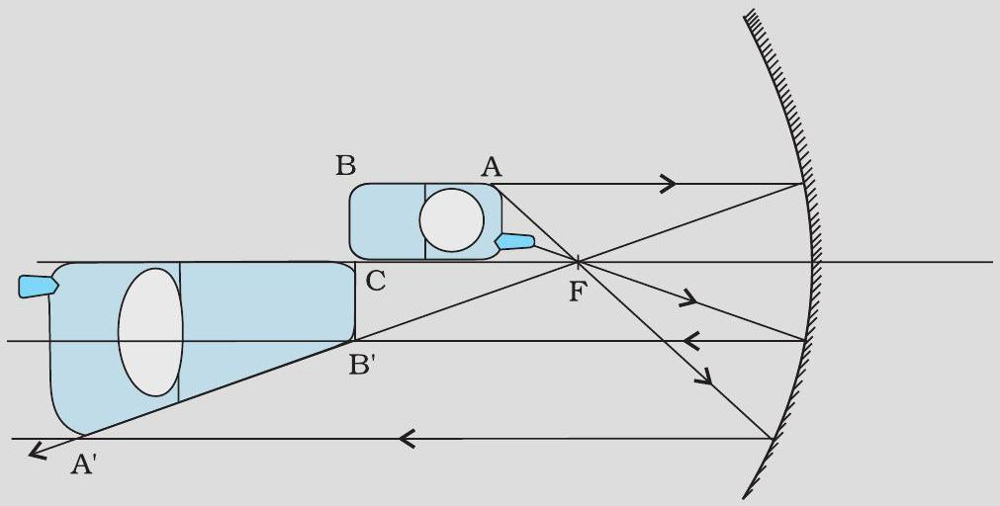
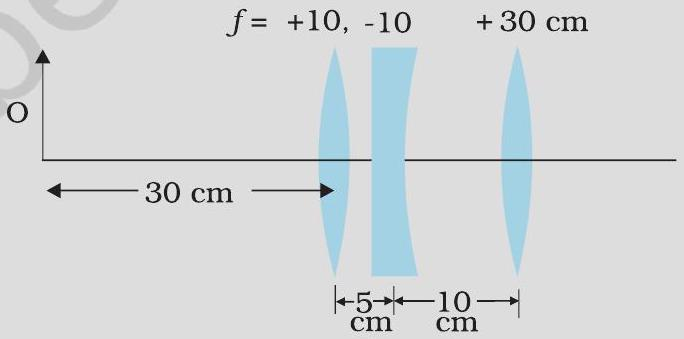
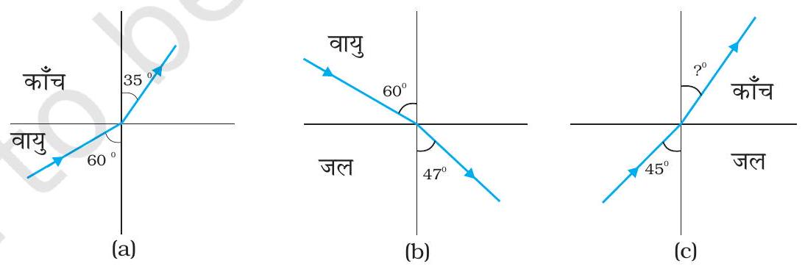
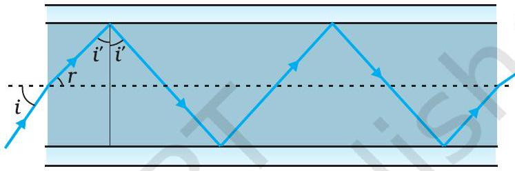
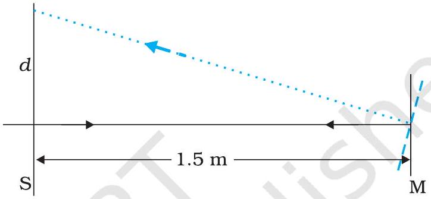
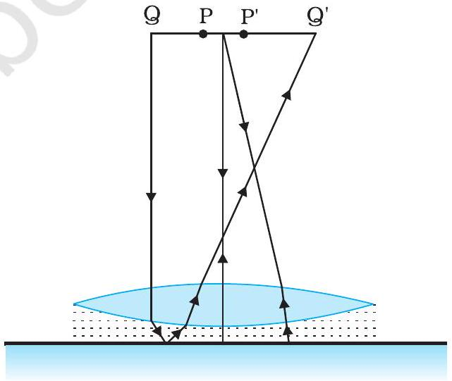

मान लीजिए चित्र 9.5 में दर्शाए अवतल दर्पण के परावर्तक पृष्ठ के नीचे का आधा भाग किसी अपारदर्शी (अपरावर्ती) पदार्थ से ढक दिया गया है। दर्पण के सामने स्थित किसी बिंब के दर्पण द्वारा बने प्रतिबिंब पर इसका क्या प्रभाव पड़ेगा?
किसी अवतल दर्पण के मुख्य अक्ष पर एक मोबाइल फोन रखा है। उचित किरण आरेख द्वारा प्रतिबिंब की रचना दर्शाइए। व्याख्या कीजिए कि आवर्धन एकसमान क्यों नहीं है। क्या प्रतिबिंब की विकृति दर्पण के सापेक्ष फोन की स्थिति पर निर्भर करती है?

कोई वस्तु 15 cm वक्रता त्रिज्या के अवतल दर्पण से (i) 10 cm तथा (ii) 5 cm दूरी पर रखी है। प्रत्येक स्थिति में प्रतिबिंब की स्थिति, प्रकृति तथा आवर्धन परिकलित कीजिए।
वस्तु दर्पण से 10 cm दूरी पर रखी है।
वस्तु दर्पण से 5 cm दूरी पर रखी है।
मान लीजिए कि आप किसी स्थिर कार में बैठे हैं। आप 2 m वक्रता त्रिज्या के पाशर्व दृश्य दर्पण में किसी धावक को अपनी ओर आता हुआ देखते हैं। यदि धावक 5 m s-1 की चाल से दौड़ रहा हो, तो उसका प्रतिबिंब कितनी चाल से दौड़ता प्रतीत होगा जबकि धावक (a) 39 m, (b) 29 m, (c) 19 m, तथा (d) 9 m दूर है।
धावक दर्पण से 39 m दूर है।
धावक दर्पण से 29 m दूर है।
धावक दर्पण से 19 m दूर है।
धावक दर्पण से 9 m दूर है।
वायु में रखे किसी बिंदु स्रोत से प्रकाश काँच के किसी गोलीय पृष्ठ पर पड़ता है। (n = 1.5 तथा वक्रता त्रिज्या = 20 cm) । प्रकाश स्रोत की काँच के पृष्ठ से दूरी 100 cm है। प्रतिबिंब कहाँ बनेगा?
कोई जादूगर खेल दिखाते समय n = 1.47 अपवर्तनांक के काँच के लेंस को किसी द्रव से भरी द्रोणिका में डालकर अदृश्य कर देता है। द्रव का अपवर्तनांक क्या है? क्या यह द्रव जल हो सकता है?
(i) यदि f = +0.5 m है तो लेंस की क्षमता क्या है ? (ii) किसी उभयोत्तल लेंस के दो फलकों की वक्रता त्रिज्याएँ 10 cm तथा 15 cm हैं। उसकी फ़ोकस दूरी 12 cm है। लेंस के काँच का अपवर्तनांक ज्ञात कीजिए। (iii) किसी उत्तल लेंस की वायु में फ़ोकस दूरी 20 cm है। जल में इसकी फ़ोकस दूरी क्या है? [वायु-जल का अपवर्तनांक 1.33 तथा वायु-काँच का अपवर्तनांक 1.5 है।]
यदि f = +0.5 m है तो लेंस की क्षमता क्या है?
किसी उभयोत्तल लेंस के दो फलकों की वक्रता त्रिज्याएँ 10 cm तथा 15 cm हैं। उसकी फ़ोकस दूरी 12 cm है। लेंस के काँच का अपवर्तनांक ज्ञात कीजिए।
किसी उत्तल लेंस की वायु में फ़ोकस दूरी 20 cm है। जल में इसकी फ़ोकस दूरी क्या है? [वायु-जल का अपवर्तनांक 1.33 तथा वायु-काँच का अपवर्तनांक 1.5 है।]
चित्र 9.20 में दिए गए लेंसों के संयोजन द्वारा निर्मित प्रतिबिंब की स्थिति ज्ञात कीजिए।

2.5 cm साइज़ की कोई छोटी मोमबत्ती 36 cm वक्रता त्रिज्या के किसी अवतल दर्पण से 27 cm दूरी पर रखी है। दर्पण से किसी परदे को कितनी दूरी पर रखा जाए कि उसका सुस्पष्ट प्रतिबिंब परदे पर बने। प्रतिबिंब की प्रकृति और साइज़ का वर्णन कीजिए। यदि मोमबत्ती को दर्पण की ओर ले जाएँ, तो परदे को किस ओर हटाना पड़ेगा?
4.5 cm साइज़ की कोई सुई 15 cm फोकस दूरी के किसी उत्तल दर्पण से 12 cm दूर रखी है। प्रतिबिंब की स्थिति तथा आवर्धन लिखिए। क्या होता है जब सुई को दर्पण से दूर ले जाते हैं? वर्णन कीजिए।
कोई टैंक 12.5 cm ऊँचाई तक जल से भरा है। किसी सूक्ष्मदर्शी द्वारा बीकर की तली पर पड़ी किसी सुई की आभासी गहराई 9.4 cm मापी जाती है। जल का अपवर्तनांक क्या है? बीकर में उसी ऊँचाई तक जल के स्थान पर किसी 1.63 अपवर्तनांक के अन्य द्रव से प्रतिस्थापन करने पर सुई को पुन: फोकसित करने के लिए सूक्ष्मदर्शी को कितना ऊपर/नीचे ले जाना होगा?
चित्र 9.27 (a) तथा (b) में किसी आपतित किरण का अपवर्तन दर्शाया गया है जो वायु में क्रमशः काँच-वायु तथा जल-वायु अंतरापृष्ठ के अभिलंब से 60° का कोण बनाती है। उस आपतित किरण का अपवर्तन कोण ज्ञात कीजिए, जो जल में जल-काँच अंतरापृष्ठ के अभिलंब से 45° का कोण बनाती है [चित्र 9.27 (c)]।

जल से भरे 80 cm गहराई के किसी टैंक की तली पर कोई छोटा बल्ब रखा गया है। जल के पृष्ठ का वह क्षेत्र ज्ञात कीजिए जिससे बल्ब का प्रकाश निर्गत हो सकता है। जल का अपवर्तनांक 1.33 है। (बल्ब को बिंदु प्रकाश स्रोत मानिए।)
कोई प्रिज़्म अज्ञात अपवर्तनांक के काँच का बना है। कोई समांतर प्रकाश-पुंज इस प्रिज़्म के किसी फलक पर आपतित होता है। प्रिज़्म का न्यूनतम विचलन कोण 40° मापा गया। प्रिज़्म के पदार्थ का अपवर्तनांक क्या है? प्रिज़्म का अपवर्तन कोण 60° है। यदि प्रिज़्म को जल (अपवर्तनांक 1.33) में रख दिया जाए तो प्रकाश के समांतर पुंज के लिए नए न्यूनतम विचलन कोण का परिकलन कीजिए।
अपवर्तनांक 1.55 के काँच से दोनों फलकों की समान वक्रता त्रिज्या के उभयोत्तल लेंस निर्मित करने हैं। यदि 20 cm फ़ोकस दूरी के लेंस निर्मित करने हैं तो अपेक्षित वक्रता त्रिज्या क्या होगी?
कोई प्रकाश-पुंज किसी बिंदु P पर अभिसरित होता है। कोई लेंस इस अभिसारी पुंज के पथ में बिंदु P से 12 cm दूर रखा जाता है। यदि यह (a) 20 cm फ़ोकस दूरी का उत्तल लेंस है, (b) 16 cm फ़ोकस दूरी का अवतल लेंस है, तो प्रकाश-पुंज किस बिंदु पर अभिसरित होगा?
लेंस 20 cm फ़ोकस दूरी का उत्तल लेंस है।
लेंस 16 cm फ़ोकस दूरी का अवतल लेंस है।
3.0 cm ऊँची कोई बिंब 21 cm फ़ोकस दूरी के अवतल लेंस के सामने 14 cm दूरी पर रखी है। लेंस द्वारा निर्मित प्रतिबिंब का वर्णन कीजिए। क्या होता है जब बिंब लेंस से दूर हटती जाती है?
किसी 30 cm फ़ोकस दूरी के उत्तल लेंस के संपर्क में रखे 20 cm फ़ोकस दूरी के अवतल लेंस के संयोजन से बने संयुक्त लेंस (निकाय) की फ़ोकस दूरी क्या है? यह तंत्र अभिसारी लेंस है अथवा अपसारी? लेंसों की मोटाई की उपेक्षा कीजिए।
किसी संयुक्त सूक्ष्मदर्शी में 2.0 cm फ़ोकस दूरी का अभिदृश्यक लेंस तथा 6.25 cm फ़ोकस दूरी का नेत्रिका लेंस एक-दूसरे से 15 cm दूरी पर लगे हैं। किसी बिंब को अभिदृश्यक से कितनी दूरी पर रखा जाए कि अंतिम प्रतिबिंब (a) स्पष्ट दर्शन की अल्पतम दूरी (25 cm) तथा (b) अनंत पर बने? दोनों स्थितियों में सूक्ष्मदर्शी की आवर्धन क्षमता ज्ञात कीजिए।
अंतिम प्रतिबिंब स्पष्ट दर्शन की अल्पतम दूरी (25 cm) पर बनता है।
अंतिम प्रतिबिंब अनंत पर बनता है।
25 cm के सामान्य निकट बिंदु का कोई व्यक्ति ऐसे संयुक्त सूक्ष्मदर्शी जिसका अभिदृश्यक 8.0 mm फोकस दूरी तथा नेत्रिका 2.5 cm फोकस दूरी की है, का उपयोग करके अभिदृश्यक से 9.0 mm दूरी पर रखे बिंब को सुस्पष्ट फ़ोकसित कर लेता है। दोनों लेंसों के बीच पृथकन दूरी क्या है? सूक्ष्मदर्शी की आवर्धन क्षमता क्या है?
किसी छोटी दूरबीन के अभिदृश्यक की फ़ोकस दूरी 144 cm तथा नेत्रिका की फ़ोकस दूरी 6.0 cm है। दूरबीन की आवर्धन क्षमता कितनी है? अभिदृश्यक तथा नेत्रिका के बीच पृथकन दूरी क्या है?
(a) किसी वेधशाला की विशाल दूरबीन के अभिदृश्यक की फ़ोकस दूरी 15 m है। यदि 1.0 cm फ़ोकस दूरी की नेत्रिका प्रयुक्त की गयी है, तो दूरबीन का कोणीय आवर्धन क्या है? (b) यदि इस दूरबीन का उपयोग चंद्रमा का अवलोकन करने में किया जाए तो अभिदृश्यक लेंस द्वारा निर्मित चंद्रमा के प्रतिबिंब का व्यास क्या है? चंद्रमा का व्यास 3.48 × 106 m तथा चंद्रमा की कक्षा की त्रिज्या 3.8 × 108 m है।
किसी वेधशाला की विशाल दूरबीन के अभिदृश्यक की फ़ोकस दूरी 15 m है। यदि 1.0 cm फ़ोकस दूरी की नेत्रिका प्रयुक्त की गयी है, तो दूरबीन का कोणीय आवर्धन क्या है?
यदि इस दूरबीन का उपयोग चंद्रमा का अवलोकन करने में किया जाए तो अभिदृश्यक लेंस द्वारा निर्मित चंद्रमा के प्रतिबिंब का व्यास क्या है? चंद्रमा का व्यास 3.48 × 106 m तथा चंद्रमा की कक्षा की त्रिज्या 3.8 × 108 m है।
दर्पण-सूत्र का उपयोग यह व्युत्पन्न करने के लिए कीजिए कि (a) किसी अवतल दर्पण के f तथा 2f के बीच रखे बिंब का वास्तविक प्रतिबिंब 2f से दूर बनता है। (b) उत्तल दर्पण द्वारा सदैव आभासी प्रतिबिंब बनता है जो बिंब की स्थिति पर निर्भर नहीं करता। (c) उत्तल दर्पण द्वारा सदैव आकार में छोटा प्रतिबिंब, दर्पण के ध्रुव व फ़ोकस के बीच बनता है। (d) अवतल दर्पण के ध्रुव तथा फ़ोकस के बीच रखे बिंब का आभासी तथा बड़ा प्रतिबिंब बनता है। (नोट : यह अभ्यास आपकी बीजगणितीय विधि द्वारा उन प्रतिबिंबों के गुण व्युत्पन्न करने में सहायता करेगा जिन्हें हम किरण आरेखों द्वारा प्राप्त करते हैं।)
किसी अवतल दर्पण के f तथा 2f के बीच रखे बिंब का वास्तविक प्रतिबिंब 2f से दूर बनता है, यह दिखाइए।
उत्तल दर्पण द्वारा सदैव आभासी प्रतिबिंब बनता है जो बिंब की स्थिति पर निर्भर नहीं करता, यह दिखाइए।
उत्तल दर्पण द्वारा सदैव आकार में छोटा प्रतिबिंब, दर्पण के ध्रुव व फ़ोकस के बीच बनता है, यह दिखाइए।
अवतल दर्पण के ध्रुव तथा फ़ोकस के बीच रखे बिंब का आभासी तथा बड़ा प्रतिबिंब बनता है, यह दिखाइए।
किसी मेज के ऊपरी पृष्ठ पर जड़ी एक छोटी पिन को 50 cm ऊँचाई से देखा जाता है। 15 cm मोटे आयताकार काँच के गुटके को मेज़ के पृष्ठ के समांतर पिन व नेत्र के बीच रखकर उसी बिंदु से देखने पर पिन नेत्र से कितनी दूर दिखाई देगी? काँच का अपवर्तनांक 1.5 है। क्या उत्तर गुटके की अवस्थिति पर निर्भर करता है?
निम्नलिखित प्रश्नों के उत्तर लिखिए : (a) चित्र 9.28 में अपवर्तनांक 1.68 के तंतु काँच से बनी किसी 'प्रकाश नलिका' (लाइट पाइप) का अनुप्रस्थ परिच्छेद दर्शाया गया है। नलिका का बाह्य आवरण 1.44 अपवर्तनांक के पदार्थ का बना है। नलिका के अक्ष से आपतित किरणों के कोणों का परिसर, जिनके लिए चित्र में दर्शाए अनुसार नलिका के भीतर पूर्ण परावर्तन होते हैं, ज्ञात कीजिए। (b) यदि पाइप पर बाह्य आवरण न हो तो क्या उत्तर होगा?

चित्र 9.28 में अपवर्तनांक 1.68 के तंतु काँच से बनी किसी 'प्रकाश नलिका' का अनुप्रस्थ परिच्छेद दर्शाया गया है; नलिका का बाह्य आवरण 1.44 अपवर्तनांक का है। नलिका के अक्ष से आपतित किरणों के कोणों का परिसर ज्ञात कीजिए जिनके लिए पूर्ण आंतरिक परावर्तन हो।
यदि पाइप पर बाह्य आवरण न हो तो क्या उत्तर होगा?
किसी कमरे की एक दीवार पर लगे विद्युत बल्ब का किसी बड़े आकार के उत्तल लेंस द्वारा 3 m दूरी पर स्थित सामने की दीवार पर प्रतिबिंब प्राप्त करना है। इसके लिए उत्तल लेंस की अधिकतम फ़ोकस दूरी क्या होनी चाहिए?
किसी परदे को बिंब से 90 cm दूर रखा गया है। परदे पर किसी उत्तल लेंस द्वारा उसे एक-दूसरे से 20 cm दूर स्थितियों पर रखकर, दो प्रतिबिंब बनाए जाते हैं। लेंस की फ़ोकस दूरी ज्ञात कीजिए।
(a) प्रश्न 9.10 के दो लेंसों के संयोजन की प्रभावी फ़ोकस दूरी उस स्थिति में ज्ञात कीजिए जब उनके मुख्य अक्ष संपाती हैं, तथा ये एक-दूसरे से 8 cm दूरी पर रखे हैं। क्या उत्तर आपतित समांतर प्रकाश पुंज की दिशा पर निर्भर करेगा? क्या इस तंत्र के लिए प्रभावी फ़ोकस दूरी किसी भी रूप में उपयोगी है? (b) उपरोक्त व्यवस्था (a) में 1.5 cm ऊँचा कोई बिंब उत्तल लेंस की ओर रखा है। बिंब की उत्तल लेंस से दूरी 40 cm है। दो लेंसों के तंत्र द्वारा उत्पन्न आवर्धन तथा प्रतिबिंब का आकार ज्ञात कीजिए।
प्रश्न 9.10 के दो लेंसों के संयोजन की प्रभावी फ़ोकस दूरी उस स्थिति में ज्ञात कीजिए जब उनके मुख्य अक्ष संपाती हैं, तथा ये एक-दूसरे से 8 cm दूरी पर रखे हैं। क्या उत्तर आपतित समांतर प्रकाश पुंज की दिशा पर निर्भर करेगा? क्या इस तंत्र के लिए प्रभावी फ़ोकस दूरी किसी भी रूप में उपयोगी है?
उपरोक्त व्यवस्था (a) में 1.5 cm ऊँचा कोई बिंब उत्तल लेंस की ओर रखा है। बिंब की उत्तल लेंस से दूरी 40 cm है। दो लेंसों के तंत्र द्वारा उत्पन्न आवर्धन तथा प्रतिबिंब का आकार ज्ञात कीजिए।
60° अपवर्तन कोण के प्रिज़्म के फलक पर किसी प्रकाश किरण को किस कोण पर आपतित कराया जाए कि इसका दूसरे फलक से केवल पूर्ण आंतरिक परावर्तन ही हो? प्रिज़्म के पदार्थ का अपवर्तनांक 1.524 है।
कोई कार्ड शीट जिसे 1 mm2 साइज़ के वर्गों में विभाजित किया गया है, को 9 cm दूरी पर रखकर किसी आवर्धक लेंस (9 cm फ़ोकस दूरी का अभिसारी लेंस) द्वारा उसे नेत्र के निकट रखकर देखा जाता है। (a) लेंस द्वारा उत्पन्न आवर्धन (प्रतिबिंब-साइज़/वस्तु-साइज़) क्या है? आभासी प्रतिबिंब में प्रत्येक वर्ग का क्षेत्रफल क्या है? (b) लेंस का कोणीय आवर्धन (आवर्धन क्षमता) क्या है? (c) क्या (a) में आवर्धन क्षमता (b) में आवर्धन के बराबर है? स्पष्ट कीजिए।
लेंस द्वारा उत्पन्न आवर्धन (प्रतिबिंब-साइज़/वस्तु-साइज़) क्या है? आभासी प्रतिबिंब में प्रत्येक वर्ग का क्षेत्रफल क्या है?
लेंस का कोणीय आवर्धन (आवर्धन क्षमता) क्या है?
क्या (a) में आवर्धन क्षमता (b) में आवर्धन के बराबर है? स्पष्ट कीजिए।
(a) अभ्यास 9.22 में लेंस को कार्ड शीट से कितनी दूरी पर रखा जाए ताकि वर्गों को अधिकतम संभव आवर्धन क्षमता के साथ सुस्पष्ट देखा जा सके? (b) इस उदाहरण में आवर्धन (प्रतिबिंब-साइज़/वस्तु-साइज़) क्या है? (c) क्या इस प्रक्रम में आवर्धन, आवर्धन क्षमता के बराबर है? स्पष्ट कीजिए।
अभ्यास 9.22 में लेंस को कार्ड शीट से कितनी दूरी पर रखा जाए ताकि वर्गों को अधिकतम संभव आवर्धन क्षमता के साथ सुस्पष्ट देखा जा सके?
इस उदाहरण में आवर्धन (प्रतिबिंब-साइज़/वस्तु-साइज़) क्या है?
क्या इस प्रक्रम में आवर्धन, आवर्धन क्षमता के बराबर है? स्पष्ट कीजिए।
अभ्यास 9.23 में वस्तु तथा आवर्धक लेंस के बीच कितनी दूरी होनी चाहिए ताकि आभासी प्रतिबिंब में प्रत्येक वर्ग 6.25 mm2 क्षेत्रफल का प्रतीत हो? क्या आप आवर्धक लेंस को नेत्र के अत्यधिक निकट रखकर इन वर्गों को सुस्पष्ट देख सकेंगे? [नोट : अभ्यास 9.22 से 9.24 आपको निरपेक्ष साइज़ में आवर्धन तथा किसी यंत्र की आवर्धन क्षमता (कोणीय आवर्धन) के बीच अंतर को स्पष्टतः समझने में सहायता करेंगे।]
निम्नलिखित प्रश्नों के उत्तर दीजिए- (a) किसी वस्तु द्वारा नेत्र पर अंतरित कोण आवर्धक लेंस द्वारा उत्पन्न आभासी प्रतिबिंब द्वारा नेत्र पर अंतरित कोण के बराबर होता है। तब फिर किन अर्थों में कोई आवर्धक लेंस कोणीय आवर्धन प्रदान करता है? (b) किसी आवर्धक लेंस से देखते समय प्रेक्षक अपने नेत्र को लेंस से अत्यधिक सटाकर रखता है। यदि प्रेक्षक अपने नेत्र को पीछे ले जाए तो क्या कोणीय आवर्धन परिवर्तित हो जाएगा? (c) किसी सरल सूक्ष्मदर्शी की आवर्धन क्षमता उसकी फ़ोकस दूरी के व्युत्क्रमानुपाती होती है। तब हमें अधिकाधिक आवर्धन क्षमता प्राप्त करने के लिए कम से कम फ़ोकस दूरी के उत्तल लेंस का उपयोग करने से कौन रोकता है? (d) किसी संयुक्त सूक्ष्मदर्शी के अभिदृश्यक लेंस तथा नेत्रिका लेंस दोनों ही की फ़ोकस दूरी कम क्यों होनी चाहिए? (e) संयुक्त सूक्ष्मदर्शी द्वारा देखते समय सर्वोत्तम दर्शन के लिए हमारे नेत्र, नेत्रिका पर स्थित न होकर उससे कुछ दूरी पर होने चाहिए। क्यों? नेत्र तथा नेत्रिका के बीच की यह अल्प दूरी कितनी होनी चाहिए?
किसी वस्तु द्वारा नेत्र पर अंतरित कोण आवर्धक लेंस द्वारा उत्पन्न आभासी प्रतिबिंब द्वारा नेत्र पर अंतरित कोण के बराबर होता है। तब फिर किन अर्थों में कोई आवर्धक लेंस कोणीय आवर्धन प्रदान करता है?
किसी आवर्धक लेंस से देखते समय प्रेक्षक अपने नेत्र को लेंस से अत्यधिक सटाकर रखता है। यदि प्रेक्षक अपने नेत्र को पीछे ले जाए तो क्या कोणीय आवर्धन परिवर्तित हो जाएगा?
किसी सरल सूक्ष्मदर्शी की आवर्धन क्षमता उसकी फ़ोकस दूरी के व्युत्क्रमानुपाती होती है। तब हमें अधिकाधिक आवर्धन क्षमता प्राप्त करने के लिए कम से कम फ़ोकस दूरी के उत्तल लेंस का उपयोग करने से कौन रोकता है?
किसी संयुक्त सूक्ष्मदर्शी के अभिदृश्यक लेंस तथा नेत्रिका लेंस दोनों ही की फ़ोकस दूरी कम क्यों होनी चाहिए?
संयुक्त सूक्ष्मदर्शी द्वारा देखते समय सर्वोत्तम दर्शन के लिए हमारे नेत्र, नेत्रिका पर स्थित न होकर उससे कुछ दूरी पर होने चाहिए। क्यों? नेत्र तथा नेत्रिका के बीच की यह अल्प दूरी कितनी होनी चाहिए?
1.25 cm फ़ोकस दूरी का अभिदृश्यक तथा 5 cm फ़ोकस दूरी की नेत्रिका का उपयोग करके वांछित कोणीय आवर्धन (आवर्धन क्षमता) 30 X होता है। आप संयुक्त सूक्ष्मदर्शी का समायोजन कैसे करेंगे?
किसी दूरबीन के अभिदृश्यक की फ़ोकस दूरी 140 cm तथा नेत्रिका की फ़ोकस दूरी 5.0 cm है। दूर की वस्तुओं को देखने के लिए दूरबीन की आवर्धन क्षमता क्या होगी जब- (a) दूरबीन का समायोजन सामान्य है (अर्थात अंतिम प्रतिबिंब अनंत पर बनता है)। (b) अंतिम प्रतिबिंब स्पष्ट दर्शन की अल्पतम दूरी (25 cm) पर बनता है।
दूरबीन का समायोजन सामान्य है (अर्थात अंतिम प्रतिबिंब अनंत पर बनता है)।
अंतिम प्रतिबिंब स्पष्ट दर्शन की अल्पतम दूरी (25 cm) पर बनता है।
(a) अभ्यास 9.27(a) में वर्णित दूरबीन के लिए अभिदृश्यक लेंस तथा नेत्रिका के बीच पृथकन दूरी क्या है? (b) यदि इस दूरबीन का उपयोग 3 km दूर स्थित 100 m ऊँची मीनार को देखने के लिए किया जाता है तो अभिदृश्यक द्वारा बने मीनार के प्रतिबिंब की ऊँचाई क्या है? (c) यदि अंतिम प्रतिबिंब 25 cm दूर बनता है तो अंतिम प्रतिबिंब में मीनार की ऊँचाई क्या है?
अभ्यास 9.27(a) में वर्णित दूरबीन के लिए अभिदृश्यक लेंस तथा नेत्रिका के बीच पृथकन दूरी क्या है?
यदि इस दूरबीन का उपयोग 3 km दूर स्थित 100 m ऊँची मीनार को देखने के लिए किया जाता है तो अभिदृश्यक द्वारा बने मीनार के प्रतिबिंब की ऊँचाई क्या है?
यदि अंतिम प्रतिबिंब 25 cm दूर बनता है तो अंतिम प्रतिबिंब में मीनार की ऊँचाई क्या है?
किसी कैसेग्रेन दूरबीन में चित्र 9.26 में दर्शाए अनुसार दो दर्पणों का प्रयोग किया गया है। इस दूरबीन में दोनों दर्पण एक-दूसरे से 20 mm दूर रखे गए हैं। यदि बड़े दर्पण की वक्रता त्रिज्या 220 mm हो तथा छोटे दर्पण की वक्रता त्रिज्या 140 mm हो तो अनंत पर रखे किसी बिंब का अंतिम प्रतिबिंब कहाँ बनेगा?
किसी गैल्वेनोमीटर की कुंडली से जुड़े समतल दर्पण पर लंबवत आपतित प्रकाश (चित्र 9.29), दर्पण से टकराकर अपना पथ पुनः अनुरेखित करता है। गैल्वेनोमीटर की कुंडली में प्रवाहित कोई धारा दर्पण में 3.5° का परिक्षेपण उत्पन्न करती है। दर्पण के सामने 1.5 m दूरी पर रखे परदे पर प्रकाश के परावर्ती चिह्न में कितना विस्थापन होगा?

चित्र 9.30 में कोई समोत्तल लेंस (अपवर्तनांक 1.50) किसी समतल दर्पण के फलक पर किसी द्रव की परत के संपर्क में दर्शाया गया है। कोई छोटी सुई जिसकी नोंक मुख्य अक्ष पर है, अक्ष के अनुदिश ऊपर-नीचे गति कराकर इस प्रकार समायोजित की जाती है कि सुई की नोंक का उलटा प्रतिबिंब सुई की स्थिति पर ही बने। इस स्थिति में सुई की लेंस से दूरी 45.0 cm है। द्रव को हटाकर प्रयोग को दोहराया जाता है। नयी दूरी 30.0 cm मापी जाती है। द्रव का अपवर्तनांक क्या है?
